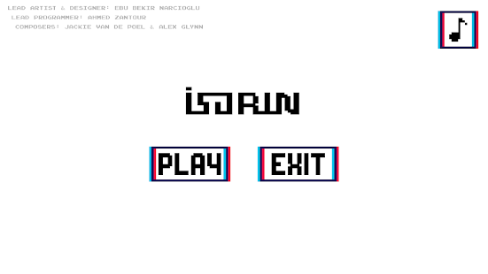
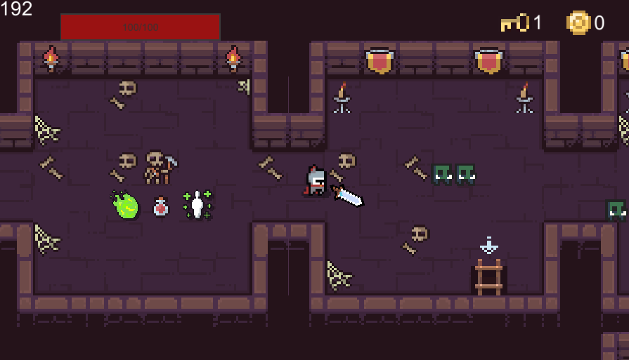
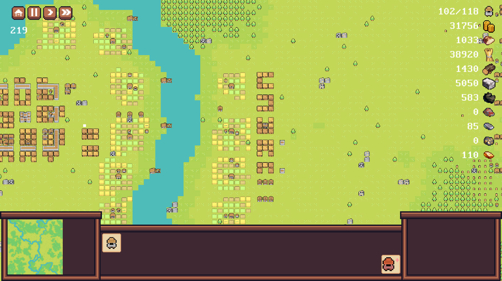

Ahmed Zantour
Contact me through discord! (Vir#8824)
I'm a games programmer! Specialized in Unity with over 3 years of experience.
Skill set:
I'm a generalist programmer that can code most things you ask for. However I'm mostly experienced with 2D but don't let that stop you from contacting me, I'm always down for a good challenge. I write performance efficient code by default.
Experience:
- UI scripting
- 2D systems
- General systems (inventory, dialog, etc...)
- Networking (nothing big scale)
- Unity DOTS, Burst, Jobs
- Mobile games (android only)
- Experienced with medium to large sized projects and their difficulty curve
Games I've worked on:
Most of the games I've worked on never saw the day of light due to them either being a systems test project (nothing much to play/show) or being abandoned because of art limitations (I don't do art so I use free assets).
Finished Games:


Unfinished Projects:
- SomeRPGGame: Roguelike RPG game

- Project-V: Mini RTS game with random world generation

Game Jams:
https://ldjam.com/events/ludum-dare/48/the-bottom-of-the-snow